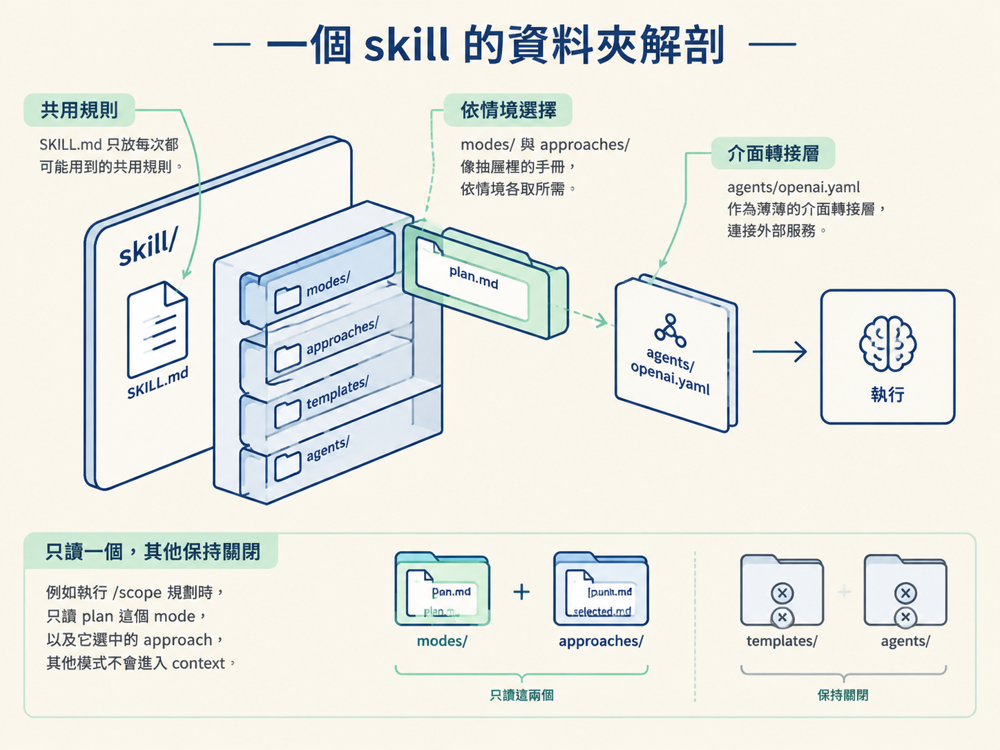
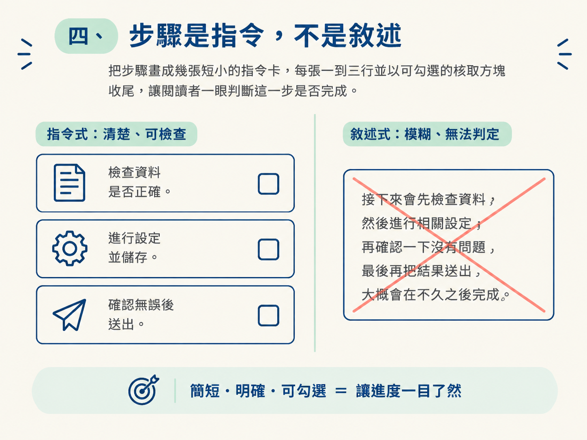
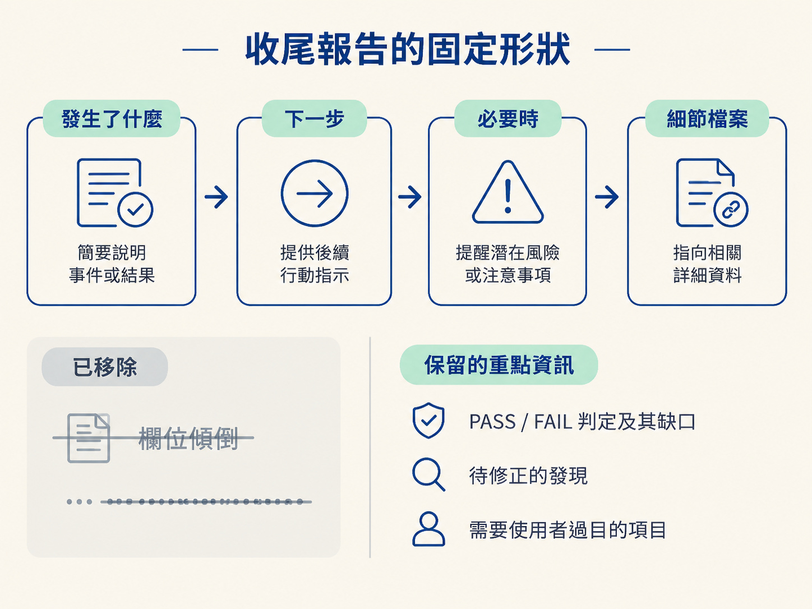
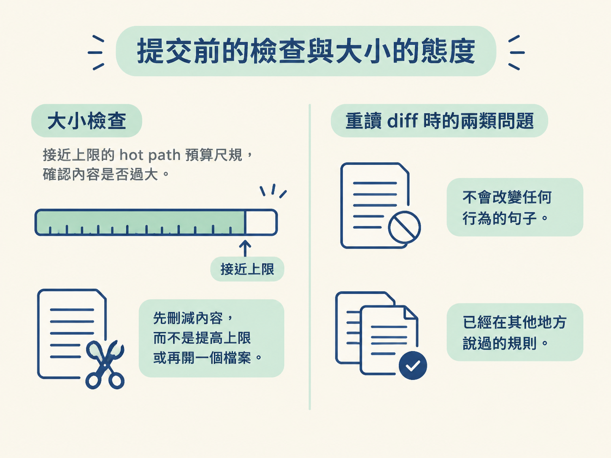

學完這一課，你應該能看懂一個 skill 的資料夾結構：SKILL.md、modes/、approaches/、templates/ 與 agents/openai.yaml 各自負責什麼；也能用六條撰寫規則檢查自己的 skill，判斷哪些內容該留在 SKILL.md，哪些內容值得拆成獨立檔案。
上一課已經建立成本模型：每一行都是 recurring cost，而且內容會沿著不同載入路徑進入 context。知道「要省」是一回事，真的把 skill 寫得精準又好維護，則是另一回事。
你可能看過別人的 skill：檔案不長，卻能讓 agent 穩定完成複雜工作。反過來，自己寫的 skill 可能又長又詳細，agent 卻還是常常跑偏。差別通常不在於誰寫了更多，而在於兩件事。
第一，是把不同情境需要的行為放進不同檔案，讓入口只保留最常走的路。第二，是對每一句話保持紀律：什麼值得寫、什麼只是重複模型原本就會做的事，以及指令要寫到多具體。
這一課先把一個 skill 的骨架攤開，再用六條規則檢查每一行是否真的有用。
在 jsm-skills 裡，每個 skill 都是一個資料夾。固定的入口是 SKILL.md，其他資料夾則依 skill 的需要出現：
| 檔案或資料夾 | 裝什麼 | 什麼時候被讀 |
|---|---|---|
SKILL.md | 路由器與共用規則，例如輸出風格、行為分派、前置檢查 | 每次執行都完整載入 |
modes/ | 各種行為模式，一次只讀一個 | 依當次情境選一個載入 |
approaches/ | 具名的拆解策略，例如 Tracer Bullet、Skateboard | 只在被選中時讀 |
templates/ | 產出格式的參考，例如 PR、postmortem 模板 | 產出時才讀 |
agents/openai.yaml | 給其他工具，例如 Codex 的介面轉接層 | 由客戶端載入，本身沒有邏輯 |
這個結構就是上一課所說的 progressive disclosure：先只拿眼前需要的資料，像做菜時先把當餐要用的食材放到砧板上，不必把整個廚房都搬進來。
SKILL.md 只放每次都可能用到的共用規則；modes/ 與 approaches/ 則像抽屜裡的手冊，依情境各取所需。重點是「選一個讀」，不是「全部讀」。例如執行 /scope 規劃時，只讀 plan 這個 mode，以及它選中的 approach，其他模式不會進入 context。

agents/openai.yaml 的角色也很容易被誤會。它不是寫給模型看的行為指令，而是一層薄薄的介面轉接：提供顯示名稱、簡短描述、預設提示等資訊，讓同一份 skill 能透過不同工具，例如 Claude Code 與 Codex，以各自的介面呈現。
真正的行為邏輯仍然在 SKILL.md 裡。這種「一份可攜的指令，加上各客戶端的薄轉接」讓 skill 能跨工具使用，又不必為每個工具複製一份邏輯。
資料夾結構決定載入成本的上限，句子品質則決定實際成本的下限。以下六條規則可以直接拿來審查自己的 skill。
如果模型本來就會照做，這一行就是純成本、零效益，應該刪掉。
最常見的例子是模糊鼓勵，例如「請小心」、「請徹底」、「多想一下」。這些話通常不會提供新的判斷條件，只會讓每次載入多幾個字。
真正有價值的是會改變行為的具體規則，例如：「找不到測試檔時，先詢問使用者偏好哪個框架。」這句話清楚指定了觸發條件與下一步，agent 才有機會真的做出不同選擇。
skill 的工作是告訴 agent「做什麼」。為什麼這樣做、曾經考慮過哪些替代方案，以及這段規則的歷史，通常應該留在 commit message 或 PR，而不是放進每次都要載入的 skill 本文。
只有在理由能阻止 agent 做錯事時，才保留一個很短的說明。把推理搬出 skill，不代表不重視推理，而是把它放到不必每次載入的地方。
模型已經理解的標準術語，直接叫名字即可，不必再展開教科書式定義。例如 idempotent（冪等）、invariant（不變量）、race condition（競態條件）、YAGNI 與 tracer bullet，都可以直接使用。
真正需要解釋的是專案自己發明的詞，例如 Assumed 規格或 workflow tier。這類詞只在一個地方說明一次，其他檔案直接引用即可，避免同一份定義在不同地方逐漸漂移。
步驟不要寫成一大段連貫的說明。每個步驟控制在一到三行，並以可檢查的條件收尾。
可以使用「如果 X，就做 Y」的形式，或使用核取項目 [ ]。重點是讀完後能明確判斷這一步是否完成，而不是只能猜測「接下來大概會發生什麼」。

同一條規則如果出現兩次，刪掉其中一份，改成指向另一份。重複內容會讓 skill 變長，也會讓未來修改時出現兩份版本不一致的風險。
唯一的例外是輸出風格區塊。每個 skill 都必須能獨立安裝與散布，因此這個共用區塊會刻意保留在每個 SKILL.md 裡，而不是抽成共用檔。這不是疏漏，而是為了讓每個 skill 保持自足。
所有 skill 使用同一種語氣：對使用者說「你」，語氣溫暖而直接；每一步都框成「這是我的建議，你可以跳過」，而不是生硬地下命令。
這套語氣應該在每個 SKILL.md 的共用輸出風格區塊裡定義一次。它管的不只是對話，也包括 skill 產生的檔案，例如 scope、spec 與 verify 報告。
因此，模板不應該塞入已經修飾好的完整段落。模板只需要保留事實與格式的簡短提示，讓 agent 在產出時套用統一語氣。否則每次執行都會重新支付同一份措辭的成本。
skill 執行完會產生一份給人看的總結，而人通常只是快速掃過。因此，報告要先給重點，細節則指向檔案：
應該刪掉的是「欄位傾倒」與一長串打勾清單，例如「語意標籤：正確」、「鍵盤操作：可導覽」。這些可能只是確認噪音，或早已寫在檔案裡，不需要再輸出一次。
真正值得留下的，是對行動有幫助的資訊：一個 PASS/FAIL 判定及其缺口、待修正的發現，以及需要使用者過目的項目。

拆檔要同時符合兩個條件：內容「很少被需要」，而且「本身很長」。只有這樣，才值得把它移出主路徑，避免每次執行都載入。
罕見但很短的內容，或經常使用但很短的內容，都留在原地即可。分檔不是為了讓資料夾看起來整齊，而是為了改善載入路徑。
真的拆成獨立檔案時，必須寫清楚觸發條件，例如：「如果 X，先讀 Y 再繼續。」這樣 agent 才不會知道檔案存在，卻在需要時漏讀。
修改完 skill，提交前先執行 npm run check。它會檢查跨工具相容性，以及熱路徑的大小預算。
如果某條路徑接近上限，原則是先刪內容，而不是直接提高上限或再增加一個檔案。接著重讀一次 diff，特別找兩類問題：

刪減理想上不應該改變行為；但如果某次刪除可能改變 agent 的判斷，就要明確標出影響，並跑一次驗證確認。
大小預算的目的，是讓 skill 持續成長時仍然保持精瘦。收到警告，代表應該回頭刪減，而不是代表上限訂得太低。這些 skill 彼此串接、各自帶著模式，本來就可能比單一用途的 skill 大；目標不是追求固定行數，而是刪到剛好夠用。
一個 skill 的骨架是：SKILL.md當入口；modes/與approaches/依情境各讀一個；templates/在產出時才讀；agents/openai.yaml只負責薄薄的介面轉接。六條撰寫規則是：一行必須改變行為、給指令不給理由、叫出概念不解釋概念、步驟要是可檢查的指令、一條規則只說一次、語氣只定義一次。收尾報告固定包含 Headline、Next、必要時的 Heads up，以及指向細節檔案的指標。拆檔的判準是「罕見又長」，而且必須寫明觸發條件。
規則寫在文件裡，仍然可能漂移：有人忘記、有人抄錯，也有人悄悄把大小上限調高。下一課會把這些文字規則變成可執行的檢查：11 條 lint 規則、byte budget，以及一條很重要的設計——在真正超標前，先用警告線保留一段緩衝。